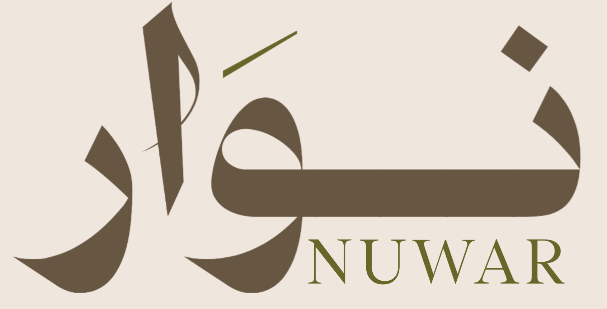
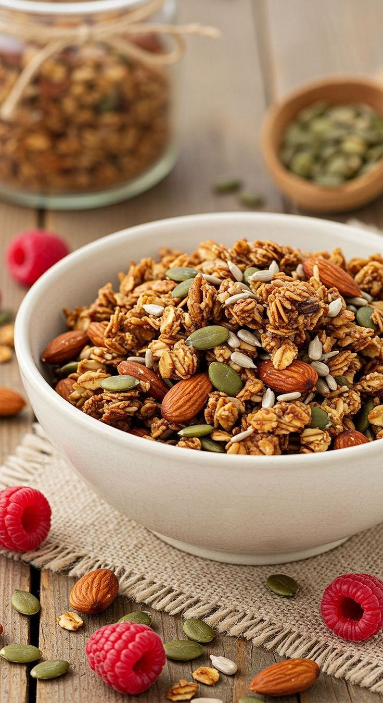

بداية يومك الصحية تبدأ من هنا

ما هي الجرانولا ؟
الجرانولا هي مزيج غذائي متوازن يعتمد على الشوفان الكامل كمصدر رئيسي للكربوهيدرات المعقّدة، ويُدعّم ب المكسرات والبذور الغنية بالدهون الصحية والبروتين النباتي. يتم تحميص هذا الخليط بدرجة حرارة مدروسة للحفاظ على قيمته الغذائية ومنحه قواماََ مقرمشاََ محبّباً
في نُوَار، يتم إعداد الجرانولا باستخدام مكونات طبيعية مختارة بعناية مثل العسل الطبيعي، الطحينة، والبذور الوظيفية (الشيا ، الكتان ، دوار الشمس ، اليقطين)، لتقديم منتج يجمع بين القيمة الغذائية العالية والطعم المتوازن—دون استخدام مواد حافظة أو مكونات مصنّعة
لماذا جرانولا نُوَار؟🌿
بفضل الدهون الصحية وأوميغا من البذور تدعم صفاء الذهن
من الكربوهيدرات المعقدة في الشوفان بدون ارتفاع مفاجئ في السكر
غنية بالألياف لدعم الهضم بشكل صحي
دهون غير مشبعة مفيدة من المكسرات والبذور
محلاة بالعسل ومكونات طبيعية بدون مواد حافظة
خيار مغذي يدعم النمو ويقلل الاعتماد على الوجبات المصنعة